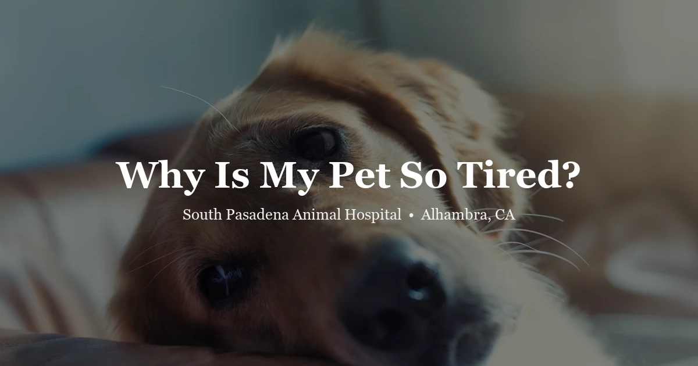

April 19, 2026 · 8 min read
Why Is My Pet So Tired? Understanding Lethargy in Dogs, Cats & Exotic Pets

Every pet owner has seen it: a dog who seems disinterested in his morning walk, a cat who hasn't jumped onto the couch all day, a rabbit sitting hunched in the corner of the enclosure. Sometimes the explanation is simple — it was a long week, the weather changed, or the pet is just having an off day. But lethargy is also one of the most common early signs of illness across virtually every species of companion animal. The challenge is knowing which kind you're looking at.
This guide explains what true lethargy looks like, the medical conditions that most commonly cause it, and the specific signs that mean you should call your veterinarian rather than wait and see.
What “Lethargy” Actually Means
Lethargy is not the same as tiredness. Tiredness follows a cause — a dog who hiked five miles naps for hours, then returns to normal. Lethargy has no obvious cause, or it persists well beyond when a tired pet would have recovered. Signs of true lethargy include:
- Reduced interest in activities the pet normally enjoys (walks, play, interaction)
- Sleeping significantly more than their baseline
- Slow or reluctant responses to stimulation — name being called, food being prepared
- Decreased appetite (often accompanies lethargy when illness is present)
- Unusual quietness in a normally vocal or active pet
The key question to ask is: Is this different from my pet's normal? You know your pet's baseline better than anyone. A sudden shift from that baseline — especially without an obvious physical explanation — is the signal worth paying attention to.
Common Medical Causes of Lethargy
Infections
Bacterial, viral, and fungal infections all suppress energy levels while the immune system is active. Common examples include upper respiratory infections in cats, parvovirus in unvaccinated dogs, leptospirosis (a bacterial infection transmitted through contaminated water), and tick-borne diseases. In Southern California and the San Gabriel Valley, ticks are present year-round in foothill and chaparral areas — anaplasmosis and ehrlichiosis are relevant local tick-borne diseases that commonly cause lethargy, fever, and decreased appetite in dogs.
Pain
A pet in pain often presents first as lethargic rather than obviously painful. Dental disease, orthopedic conditions, abdominal pain, and urinary tract infections all reduce a pet's willingness to move and engage. Cats are especially skilled at masking pain — a cat who seems "quiet" or "calm" may actually be in significant discomfort. Any lethargic cat warrants a thorough physical exam including palpation of the abdomen and a dental inspection.
Metabolic and Hormonal Conditions
Several endocrine and organ diseases present primarily as lethargy, especially in their early stages:
- Hypothyroidism — underactive thyroid gland; common in dogs, causes weight gain, cold intolerance, and profound lethargy
- Addison's disease (hypoadrenocorticism) — adrenal insufficiency that can cause episodic lethargy, vomiting, and collapse; often called "the great pretender" because signs wax and wane
- Kidney disease — reduced kidney function causes toxin accumulation, leading to nausea and lethargy; chronic kidney disease is particularly common in older cats
- Liver disease — the liver filters toxins, and when it's compromised, affected animals feel systemically unwell
- Diabetes mellitus — uncontrolled blood sugar causes fatigue and general malaise in both dogs and cats
Cardiac Disease
Heart disease reduces the efficiency of oxygen delivery to tissues. Affected pets tire easily, may lose interest in exercise, and in later stages may show labored breathing. Lethargy combined with exercise intolerance in a middle-aged or older dog — particularly certain breeds like Cavalier King Charles Spaniels, Dobermans, and Boxers — is worth evaluating promptly.
Anemia
Low red blood cell counts reduce oxygen-carrying capacity. Anemia can result from internal bleeding, immune-mediated destruction of red blood cells, bone marrow disease, or blood-sucking parasites. A pale or white gum color in a lethargic pet is a warning sign requiring immediate veterinary attention.
Toxin Ingestion
Many household toxins — including certain plants, rodenticides, xylitol (a sweetener in sugar-free products), and some medications — cause lethargy as an early sign of toxicity. If you suspect your pet ingested something and they are lethargic, this is an emergency. Contact your veterinarian or the ASPCA Animal Poison Control Center (888-426-4435) immediately.
When Lethargy Is a Same-Day Emergency
Do not wait — call the clinic or go to an emergency hospital if lethargy is accompanied by:
- Pale, white, blue, or yellow-tinged gums
- Difficulty breathing or rapid, labored breathing
- Collapse or inability to stand
- Seizures or disorientation
- Distended or painful abdomen
- Known or suspected toxin exposure
- No urination in 12+ hours alongside lethargy
- A puppy or kitten under 16 weeks — young animals can deteriorate within hours
Why Cats Are Especially Good at Hiding Illness
Cats evolved as both predators and prey animals, which means instinct drives them to hide signs of weakness. A cat who is quietly sick may continue to eat (less, but still), continue to groom (less thoroughly), and generally appear "okay" until the disease has progressed significantly. By the time lethargy becomes unmistakable in a cat, the illness is often not trivial.
This is one of the core reasons annual wellness exams matter so much for cats. Bloodwork, blood pressure, and a physical exam can identify kidney disease, hyperthyroidism, and other conditions in early, treatable stages — long before a cat's lethargy becomes obvious. The AAHA Senior Care Guidelines recommend biannual exams for cats over seven years.
Lethargy in Exotic Pets — Why It’s Particularly Urgent
In exotic companion animals, lethargy is often a late sign — these animals hide illness even more effectively than cats, and by the time behavior changes become visible, the condition may be advanced. This is not an overstatement: what looks like mild quietness in a rabbit or bird can represent a critical situation within hours.
Rabbits that are lethargic, sitting hunched, or grinding their teeth may be experiencing gastrointestinal stasis (GI stasis) — a condition where gut motility slows or stops. GI stasis is painful, rapidly progressive, and can be fatal within 24–48 hours without treatment. Any rabbit that has not eaten or produced droppings for more than 6–8 hours needs to be seen today.
Guinea pigs that are lethargic, hunched, and reluctant to move may be in pain from dental disease, respiratory infection, urinary stones, or vitamin C deficiency (scurvy). Guinea pigs cannot produce their own vitamin C, and deficiency develops rapidly on inadequate diets, causing joint pain and systemic illness.
Birds who are fluffed up, sitting at the bottom of the cage, or sleeping more than usual are almost always sick. A fluffed bird is trying to retain body heat — a behavioral sign of systemic illness. Birds should be seen within hours of showing these signs, not days. Common causes include bacterial infections, heavy metal toxicity, liver disease, and respiratory infections.
Reptiles can be genuinely challenging because their normal activity levels vary with temperature and season. The key question is whether the behavior is appropriate for the current husbandry setup. A lethargic bearded dragon at proper temperatures who is not eating warrants a veterinary evaluation — common causes include metabolic bone disease, parasites, respiratory infection, and dystocia in females.
What the Vet Will Do
A veterinary workup for a lethargic pet begins with a detailed history — when did you first notice the change, what has eating and drinking been like, any recent exposures, and what the pet's normal baseline looks like. A physical exam follows, assessing temperature (normal for dogs and cats: 101–102.5°F), heart rate and rhythm, lung sounds, mucous membrane color, abdominal palpation, and lymph node size.
Depending on findings, the veterinarian will typically recommend a minimum database: complete blood count (CBC), chemistry panel, and urinalysis. These tests screen for the most common causes of lethargy and often identify the problem or narrow it significantly. Additional diagnostics — X-rays, ultrasound, thyroid testing, tick-borne disease panels — are added as indicated.
Many causes of lethargy respond quickly to appropriate treatment. Getting there sooner rather than later almost always leads to a better outcome.
Frequently Asked Questions
How do I know if my pet is lethargic or just tired?
Normal tiredness follows exertion — a dog who ran hard at the park naps afterward, then returns to baseline. True lethargy is different: the pet is quieter than normal for no obvious reason, reluctant to engage with people or play, and may not respond with usual enthusiasm to food or walks. If the low energy persists beyond 24 hours or is accompanied by other symptoms, it warrants a vet call.
How long should I wait before calling the vet?
For most adult pets, 24 hours of unexplained lethargy with no improvement is a reasonable threshold for calling your vet. Sooner if other symptoms are present. For puppies, kittens, and exotic pets — rabbits, birds, guinea pigs — even a few hours of lethargy warrants a call, as they deteriorate more quickly.
My dog sleeps a lot — is that normal?
Dogs sleep considerably more than humans — 12 to 14 hours per day is typical for adults, with puppies and seniors sleeping even more. The question is whether the sleep is different from your pet's baseline. A dog who suddenly sleeps more than usual or seems reluctant to get up and engage when they normally would is showing a behavioral change worth noting.
What blood tests does the vet run for a lethargic pet?
A standard workup includes a complete blood count (CBC) to check for anemia, infection, or inflammatory changes, and a chemistry panel to evaluate kidney function, liver enzymes, blood glucose, and electrolytes. Thyroid testing (T4) is often added for cats over seven and dogs with compatible signs. Tick-borne disease panels may be added for dogs with outdoor exposure in the SGV foothills.
Can stress or anxiety cause lethargy in pets?
Yes. Major changes — a new pet or person in the home, moving, loud events — can cause temporary behavioral withdrawal. However, stress-related quietness typically resolves within a few days. Persistent lethargy should not be attributed to stress without first ruling out medical causes. Book an appointment if you're unsure.